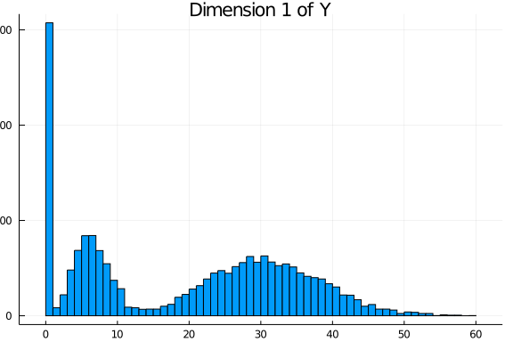

Introduction
This document contains the data generation process for the dataset accompanying the LRMoE.jl package (see here). This also serves as an example of using the sim_dataset function included in the package.
Data Simulation
Complete Data
Suppose there is an auto-insurance company with two lines of business, with a total of 10,000 policies. The policyholder information includes sex (1 for Male and 0 for Female), driver's age (with range 20 - 80), car age (with range 0 - 10), and region (1 for urban and 0 for rural). We assume all covariates are uniformly and independently drawn at random.
# Random seed for reproducible results
Random.seed!(7777)
sample_size = 10000
intercept = fill(1.0, sample_size)
sex = rand(Binomial(1, 0.50), sample_size)
aged = rand(Uniform(20, 80), sample_size)
agec = rand(Uniform(0, 10), sample_size)
region = rand(Binomial(1, 0.50), sample_size)
X = DataFrame(intercept = intercept, sex= sex,
aged = aged, agec = agec, region = region)The first few rows of X are shown below.
5×5 DataFrame
Row │ intercept sex aged agec region
│ Float64 Int64 Float64 Float64 Int64
─────┼────────────────────────────────────────────
1 │ 1.0 1 56.4367 3.3857 1
2 │ 1.0 1 29.7025 2.31892 1
3 │ 1.0 1 33.4796 8.61125 0
4 │ 1.0 0 38.7478 2.88865 1
5 │ 1.0 1 47.348 9.01135 0For simplicity, we assume there are two latent risk classes: low (L) and high (H). The characteristics for the high-risk class are male, young age, old car age and urban region. This is specified by the following matrix of logit regression coefficients, where the second row represents the reference class.
α = [-0.5 1.0 -0.05 0.1 1.25;
0.0 0.0 0.0 0.0 0.0]We consider a two-dimensional response: claim frequency from the first business line, and claim severity from the second business line. For demonstration purposes and for simplicity, we don't consider the same business line to avoid the complication where zero frequency necessarily implies zero severity. The component distributions and their parameters are specified as follows.
comp_dist = [PoissonExpert(6.0) ZIGammaCountExpert(0.20, 30, 0.50);
LogNormalExpert(4.0, 0.3) InverseGaussianExpert(20, 20)]The LRMoE.jl package includes a simulator. Given the covariates and parameters defined above, we can directly simulate a dataset.
Y_complete = LRMoE.sim_dataset(α, X, comp_dist)The simulated values are plotted as follows. For each dimension of Y, the histogram is relatively well separated as two components. This is more or less done on purpose to demonstrate that the fitting procedure can identify the true model when it is known. In practice, we are usually less concerned of the underlying data generating distribution, as long as the LRMoE model provides a reasonable fit of data.


Truncation and Censoring
One distinct feature of LRMoE is dealing with data truncation and censoring, which is common in insurance contexts. Consequently, instead of one single number for each dimension d, a tuple (tl_d, yl_d, yu_d, tu_d) is required, where tl_d/tu_d are the lower/upper bounds of truncation, and yl_d/yu_d are the lower/upper bounds of censoring.
For illustration purposes, we assume the dataset is subject to the following truncation and censoring.
| Index | Y_complete[:,1] | Y_complete[:,2] |
|---|---|---|
| 1-6000 | No truncation or censoring | No truncation or censoring |
| 6001-8000 | No truncation or censoring | Left Truncated at 5 |
| 8001-10000 | No truncation or censoring | Right Censored at 100 |
# First block: 1~6000
X_obs = X[1:6000,:]
tl_1 = fill(0.0, 6000)
yl_1 = Y_complete[1:6000, 1]
yu_1 = Y_complete[1:6000, 1]
tu_1 = fill(Inf, 6000)
tl_2 = fill(0.0, 6000)
yl_2 = Y_complete[1:6000, 2]
yu_2 = Y_complete[1:6000, 2]
tu_2 = fill(Inf, 6000)
# Second block: 6001~8000
keep_idx = Y_complete[6001:8000,2] .>= 5
keep_length = sum(keep_idx) # 1837 out of 2000
append!(X_obs, X[6001:8000,:][keep_idx,:])
append!(tl_1, fill(0.0, keep_length))
append!(yl_1, Y_complete[6001:8000, 1][keep_idx])
append!(yu_1, Y_complete[6001:8000, 1][keep_idx])
append!(tu_1, fill(Inf, keep_length))
y_temp = Y_complete[6001:8000, 2][keep_idx]
append!(tl_2, fill(5.0, keep_length))
append!(yl_2, Y_complete[6001:8000, 2][keep_idx])
append!(yu_2, Y_complete[6001:8000, 2][keep_idx])
append!(tu_2, fill(Inf, keep_length))
# Third block: 8001~10000
append!(X_obs, X[8001:10000,:])
append!(tl_1, fill(0.0, 2000))
append!(yl_1, Y_complete[8001:10000, 1])
append!(yu_1, Y_complete[8001:10000, 1])
append!(tu_1, fill(Inf, 2000))
y_temp = Y_complete[8001:10000, 2]
censor_idx = y_temp .>= 100.0 # 21 out of 2000
yl_temp = copy(y_temp)
yl_temp[censor_idx] .= 100
yu_temp = copy(y_temp)
yu_temp[censor_idx] .= Inf
append!(tl_2, fill(0.0, 2000))
append!(yl_2, yl_temp)
append!(yu_2, yu_temp)
append!(tu_2, fill(Inf, 2000))
# Put things together
Y_obs = DataFrame(tl_1 = tl_1, yl_1 = yl_1, yu_1 = yu_1, tu_1 = tu_1,
tl_2 = tl_2, yl_2 = yl_2, yu_2 = yu_2, tu_2 = tu_2)As a result of truncating Y_complete[:,2], 163 rows are discarded, leaving 9837 observations available for model fitting. Sample data points are show below.
3×4 DataFrame
Row │ tl_1 yl_1 yu_1 tu_1
│ Float64 Float64 Float64 Float64
─────┼────────────────────────────────────
1 │ 0.0 6.0 6.0 Inf
2 │ 0.0 8.0 8.0 Inf
3 │ 0.0 7.0 7.0 Inf3×4 DataFrame
Row │ tl_2 yl_2 yu_2 tu_2
│ Float64 Float64 Float64 Float64
─────┼──────────────────────────────────────
1 │ 0.0 89.0332 89.0332 Inf
2 │ 5.0 37.4133 37.4133 Inf
3 │ 0.0 100.0 Inf InfWe will export both the complete and incomplete datasets to the LRMoE.jl package.
@save "X_complete.jld2" X
@save "Y_complete.jld2" Y_complete
@save "X_obs.jld2" X_obs
@save "Y_obs.jld2" Y_obs